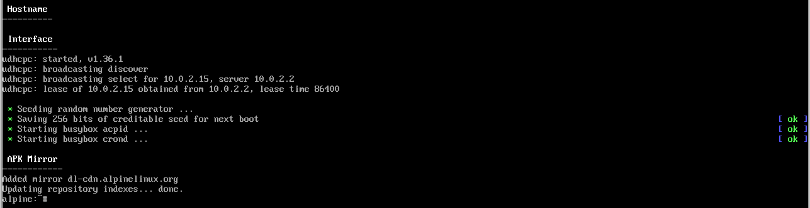
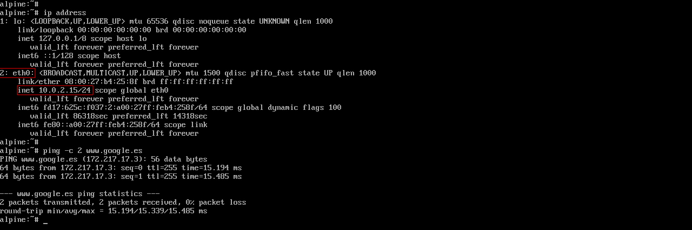
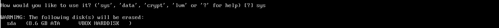
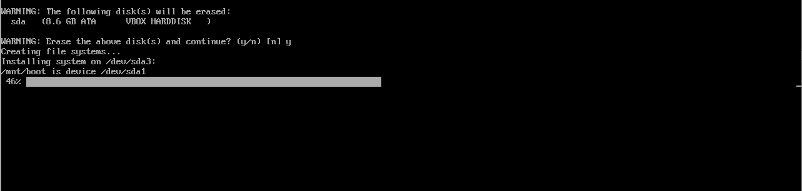
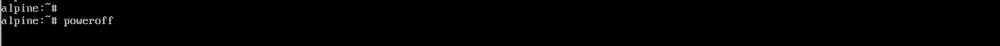

A seguinte secuencia de capturas mostra a instalación de Alpine Linux 3.20 coas opcións que hai que seleccionar en cada paso.
- Descarga desde aquí a imaxe ISO da versión Virtual (optimizada para VM) do Alpine Linux 3.20
- Inicia a VM que creaches no VirtualBox e, no diálogo que aparece para montar o DVD desde o que instalar o SO, selecciona a imaxe ISO descargada (alpine-virt-3.20.2-x86_64.iso) e reinicia a VM. Se che dera problemas accedendo á imaxe ISO, podes probar a apagar a VM, montar a imaxe ISO "manualmente" na unidade óptica da VM (propiedades de almacenamento da VM, véxase captura inferior), e iniciar de novo a VM.
- Se a VM se iniciou correctamente cargarase unha versión inicial mínima de Alpine. Para iniciar sesión usa o usuario root sen contrasinal.
- Para configurar os aspectos básicos de Alpine executa o comando setup-alpine -q. Como de momento o teclado non está configurado na VM, para escribir os guións terás que premer a tecla que está situada á dereita do 0 (é a tecla usada para o guión nos teclados americanos). Se ao premer esa tecla no teu teclado non aparece o guión, terás que probar con outras.
- Configura o teclado.
Na disposición (layout) escribe es.
Na variante depende do teclado que teñas (p.e. es-winkeys para un teclado con teclas Windows). En caso de dúbida escribe de novo es.

- A configuración remata con opcións seleccionadas por defecto. Por exemplo, Alpine configura a única interface de rede que ten a VM para que obteña automaticamente unha IP cando se inicie. Esta interface correspóndese co único adaptador virtual de rede que temos na VM (podes comprobalo nas propiedades de rede da VM no VirtualBox). Para obter automaticamente a IP úsase un servizo denominado DHCP que xa ven preconfigurado co VirtualBox. Na captura pode verse como se lle asigna a IP 10.0.2.15 á VM usando DHCP.

- Configura agora o contrasinal do usuario root (o administrador do sistema) executando o comando passwd.
Recoméndase usar "icap" (sen as aspas). Aínda que é un contrasinal moi curto e sinxelo, como xa se nos indica ao introducilo, válenos igualmente para o propósito desta práctica. Ten en conta que tes que introducilo dúas veces. Se decides usar outro contrasinal, é moi importante que despois te lembres del. Se obtés calquera erro neste paso 7, volve a executar o comando passwd para repetir o proceso.
IMPORTANTE: non uses caracteres "raros" para o contrasinal, porque vamos ter que usalo nalgunha ocasión máis adiante co teclado aínda sen configurar. Se usas o guión lembra que cando o teclado non estea configurado terás que premer a tecla que está situada á dereita do 0.

- Configura o disco e instala o sistema executando o comando setup-disk.
Primeiro, acepta a opción por defecto para usar o único disco ríxido (sda) que temos na VM (podes comprobalo nas propiedades de almacenamento da VM no VirtualBox).

No tipo de instalación escribe sys para realizar unha instalación estándar.
Por último, escribe y para aceptar formatar o disco e instalar Alpine nel.
NOTA: non te preocupes se che aparecen unhas mensaxes de advertencia en vermello neste paso (por exemplo: Partition#1 contains a ext4 signature). Non son erros, xa que depende de se é a primeira vez que o estás facendo ou se estás repetindo o proceso de instalación (polo que as particións no disco xa existen e somos avisados diso). Se obtiveses erros, podes repetir este paso executando de novo o comando setup-disk.

- Se todo foi ben, obterás una mensaxe de que rematou a instalación.

Apaga a VM executando o comando poweroff
- Antes de continuar, desde a configuración de almacenamento da VM en VirtualBox, extrae a imaxe ISO de Alpine.
